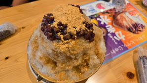
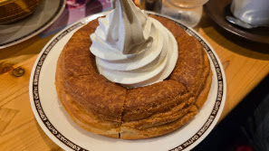

家族でコメダ珈琲店、かき氷が多すぎた話
家族でコメダ珈琲店に行ってきました。定番のシロノワールに加えて、かき氷も注文したのですが、これが想像以上のボリュームでした。
4人でも食べきれない量のかき氷
黒糖ときな粉、あずきがたっぷり乗ったかき氷が運ばれてきた瞬間、家族全員で「多い」と声が揃いました。見た目からしてかなりの山盛りです。

結局、4人がかりで挑んだものの完食できませんでした。それくらいのボリュームです。次回頼むときは覚悟して臨みたいと思います。
シロノワールも健在
コメダ珈琲店といえばやっぱりシロノワール。温かいデニッシュに冷たいソフトクリームの組み合わせは、かき氷と合わせても飽きずに楽しめました。

また家族で行きたい
お腹いっぱいになりましたが、家族みんなでわいわい言いながら食べたので満足度の高い時間でした。次はかき氷のサイズを考えて頼もうと思います。